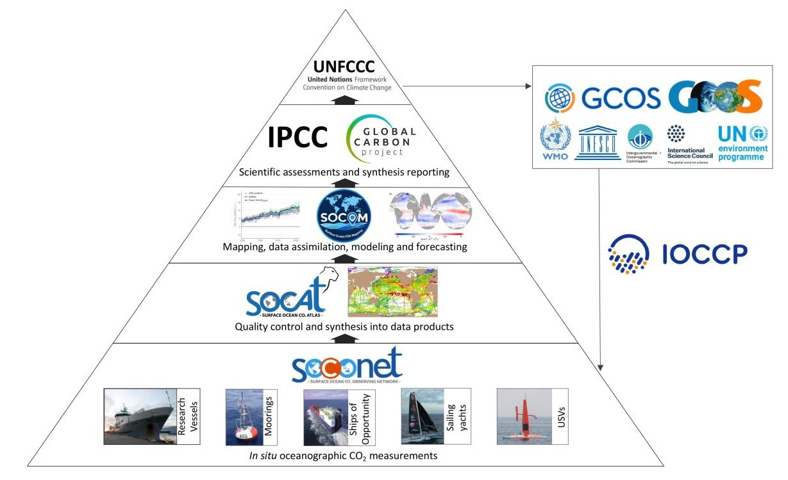

To be continued.
To be continued.
Analysis code for Experiment 5 is available on GitHub.
View on GitHubIf you use data from the SOCOMv2 experiments for a new analysis or publication, please contact the original study authors and give the SOCOM community the opportunity to contribute and be considered for co-authorship, depending on their level of involvement.
SOCONET, SOCAT and SOCOM are linked international efforts that together form the Surface Ocean Carbon Value Chain (Figure 1): from in situ CO2 measurements, through quality-controlled data products and gap-filled maps, to the Global Carbon Budget and IPCC assessments.

Every link in this chain matters: losing any one activity, or any data source (satellite, in situ or re-analysis), would stop data products from reaching the assessments that guide climate policy. Sustaining these efforts and ensuring access to essential data are crucial for advancing ocean carbon science and supporting reliable climate assessments.
SOCOM, SOCONET and SOCAT are endorsed by the International Ocean Carbon Coordination Project (IOCCP) and the GOOS Biogeochemistry Panel.
Surface Ocean CO₂ Observing Network – provides continuous in situ sfCO₂ observations.
Visit ioccp.org/soconetSurface Ocean CO₂ Atlas – the primary database of sfCO₂ observations underlying all sfCO₂ reconstructions.
Visit socat.infoThe many researchers, funders, and agencies responsible for these activities and data are thanked for their contributions. We thank the wider SOCOMv2 community for useful discussions on the study.
Global Carbon Budget – annually estimates the ocean carbon sink from flux data products and GOBMs.
Global Carbon ProjectFeel free to use the SOCOMv2 logo in presentations and publications related to SOCOMv2.